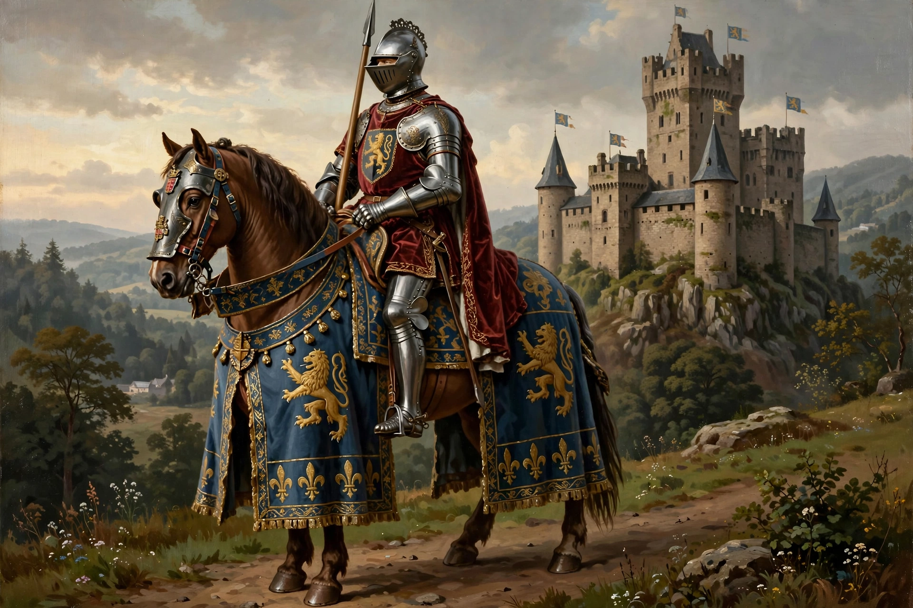

A knight is a person granted an honorary title of knighthood by a head of state or religious leader for service to the monarch, the church, or the country, especially in a military capacity. In medieval Europe, knighthood was a social rank occupied by mounted, heavily armoured warriors who typically held land (a fief) in exchange for military service under the feudal system.
The institution grew out of the mounted warriors of the Carolingian era. The word derives from Old English cniht ("boy" or "servant"). By the 11th and 12th centuries, knighthood had become a hereditary social class with its own code of conduct, chivalry, blending martial virtues with Christian piety and courtly manners.
A boy of noble birth typically became a page at about age seven, then a squire at fourteen, serving an established knight before being dubbed — struck on the shoulder with a sword — at around twenty-one. Knights proved themselves in war and in tournaments, including the joust.
During the Crusades, orders of warrior-monks arose, including the Knights Templar, the Knights Hospitaller, and the Teutonic Knights, which defended pilgrims and crusader states in the Holy Land.
From the 14th century, longbowmen, pike infantry, and gunpowder eroded the knight's battlefield dominance. Knighthood survived as an honour: modern orders such as the British Order of the Garter confer the title (Sir/Dame) for public service rather than military tenure.